入口，库存管理->常规入库，常规入库的类型分几种，有A采购入库，B转仓入库，C退货入库，这三个入库操作的权限分开，例如有采购入库权限不一定有转仓入库与退货入库权限。进入常规入库页面，有两个工作流标签，分别为“在途”与“已入库”，“在途”显示待入库的单，已入库显示入库记录，初始打开显示所有仓库的、所有需要做入库的订单(采购单，转仓单，退货单)，如图：
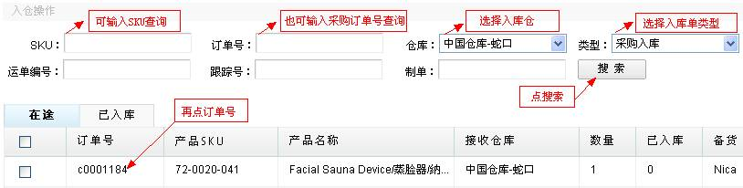
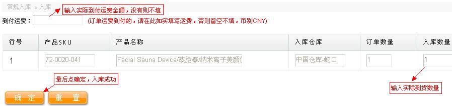
上面的例子是最普通的采购入库情况，下面再来讲一些非普通的采购入库例子：
情况一，入库数量小于原单数量，如下图可见，该采购单有四个产品：
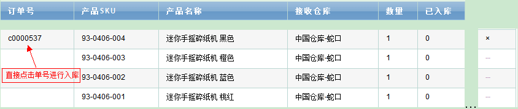
现在需要做入库，直接点击订单号，页面将跳转到采购入库填写资料的页面，系统会自动读取采购单的数量，其中产品SKU，名称，入库仓库，订单数量都是供查看的，入库数量默认取原单数量，可手动更改，假设第三和第四个产品没到货，只是001、002到货了，那么需要将003、004产品的数量改为0，如下图：
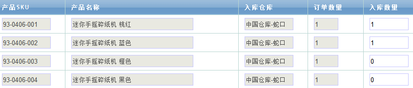
确定保存好，会有窗口提示“入库成功”，可以到“已入库”中查到刚刚做入库生成的入库单，以小字母w开头的单号如下图：
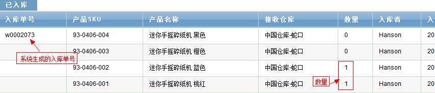
再回到“在途”找到刚刚的采购单，有显示入库数量。
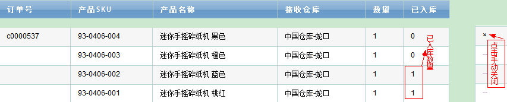
以上所述就是一次采购入库的操作过程，上例子是入库数量小于采购单数量，所以入库完后该采购单依然显示在“预入库”中供下次到货入库，但当入库数量等于采购单数量，则入库成功后，“预入库”将不再显示该订单，因为已经完成了入库。还存在一种情况，像上述例子，由于供应商缺货等原因，只到货两个，另外两个产品不再供应，也就是说这个采购单以后也无须再做入库，所以想让它不显示在“预出库”里，仓管人员可以通过上图所示，点击“x”手动关闭该采购单，关闭后的采购单，无论之前完成入库与否，都不会再显示了。
情况二，存在红单的采购单，在入库的时候，入库数量 = 采购单原单数量 - 红单数量 ，就算是完成了该采购单的入库，因为红单的数量抵消了一部分数量，实际入库数量比原单小，又以以上例子的采购单为例，在“采购操作”中做了一个红单，仓管在“预入库”也可看到红单，多一条红单的记录，001的数量是-1，如下图：
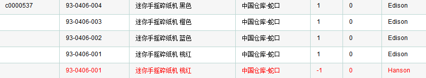
点击采购单号，跳转采购入库填写资料页面，如下图，比较可知差别，有系统提示，而且由于001产品原单数量是1，红单是-1，001的需入库数量已全部抵消，无需再做入库，所以读取原单的时候，只取了前面三个SKU的产品，保存即可。
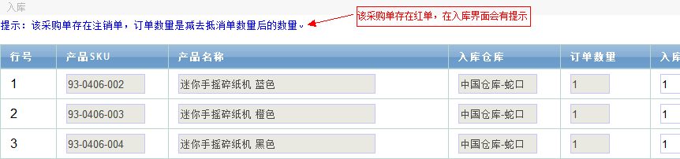
注：采购入库会自动加权平均计算产品成本，然后自动修改产品的成本，加权平均公式如下：
当前库存x当前产品成本 + 本次入库数量 x 单位总成本 / 当前库存+本次入库数量。
B、转仓入库，通过类型下拉筛选转仓入库，查到所有需要做转仓入库的订单，即都是以小写字母f开头的订单，如下图：
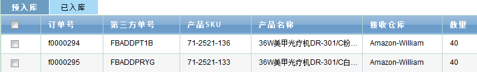
以上图所示，以f0000294为例，同样地，点击订单号，跳转到转仓入库的界面，如下两图所示(由于太长，截成两半图)，前半部分是只供查看的，包括入库数量也是锁定与原单数量相等，无法更改，这是与采购入库一个不同的地方，因为数量不能改少，所以一次就完成了入库，订单将不会再出现在“预入库”中供下次入库。
另外还有不同的是，多了五种损坏的情况，假设在从A仓转到B仓的过程中，该产品由于物流损坏了5个，在入库时，仓管“物流损坏”中填写5个数量，在保存的时候，系统会做B仓的40个该产品的入库数量，然后再生成一个B仓5个数量的不良品调拨记录。
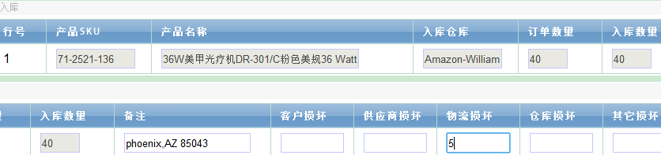
保存后到已入库中查看可见，有5个数量的不良品调拨，如下图。
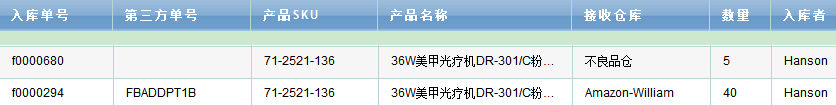
也可以到即时库存查询中查找该SKU，展开可发库存可见如下，有不良品记录数：
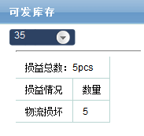
C、退货入库，通过类型下拉筛选转仓入库，查到所有需要做退货入库的订单，罗列出的以小写字母r开头的是退货单，退货单来源于销售下单的已出库中做的退货单，退货单的入库与转仓入库有相似点，下面以r0001100为例，如下图：
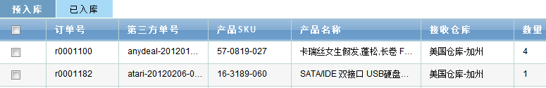
退货入库界面与转仓十分相似，很多锁定只供查看的信息，包括数量，然后后半部分也是五种损坏情况，如果任何一个损坏情况下填写了数量，那么系统会首先将4个数量入库，然后用户填写了多少个损坏数量，系统就生成多少个数量的不良品调拨。
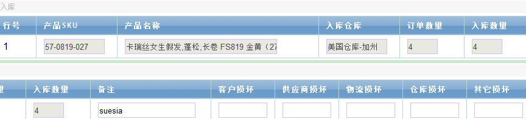
最后附上“常规入库”里的权限管理，如下图：
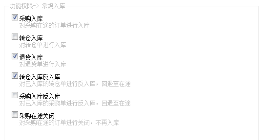